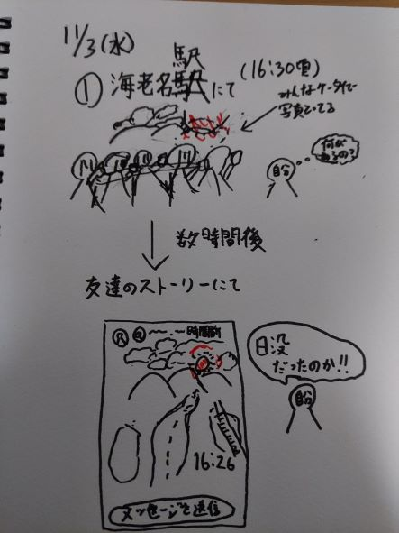
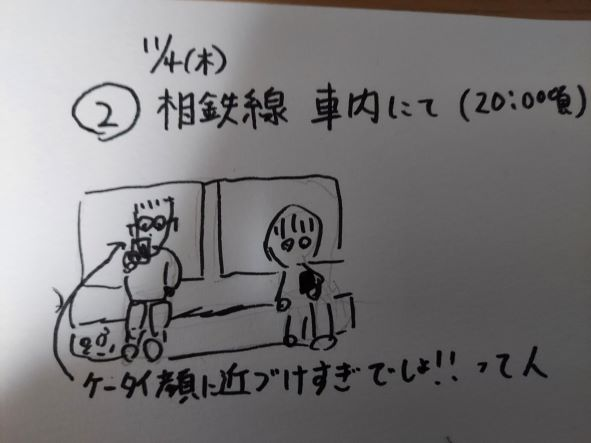
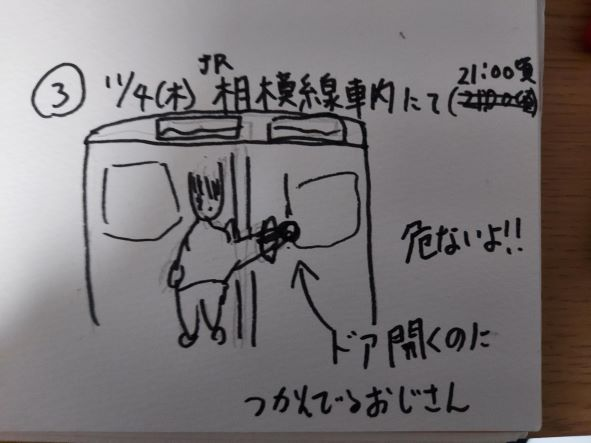

第３回事前課題
1.
11/3（水）16：30頃 海老名駅にて

スケッチの説明
これは海老名駅のJR相模線のホームがある所と小田急や相鉄のホームがある所の間にある連絡通路に人だかりができており、何があるのかなと近くを通ってみても
なんのことだか分からず気になっていました。ですが、数時間後にインスタグラムのストーリーを見ていると友達がその場所で山に沈んでゆく夕日を写真に撮って載せていたので、
気になっていたことが解決した。というスケッチです。
2.
11/4(木) 20:00頃 相鉄線車内にて

スケッチの説明
これは私が大学からの帰宅途中に相鉄線の車内にて見ているスマホがあまりにも顔（目）に近く、ちゃんと画面全体が見えているのかなと気になった人です。
ちなみにこの人は、横浜から海老名までの間ずっとスマホが顔に近かったです。
3.
11/4(木) 21:00頃 JR相模線車内にて

スケッチの説明
これは2のスマホが顔に近い人を見た相鉄線から海老名駅で相模線の車内で見た人です。電車が駅に着き、扉が開くというのにずっと扉のくぼみを持ち続けており、空く瞬間までずっと持っていたので、おじさん危ないよと思いながら見つめていましたが、怪我がなく良かったです。
扉のくぼみになにか安心する物でもあったのかなと感じました。